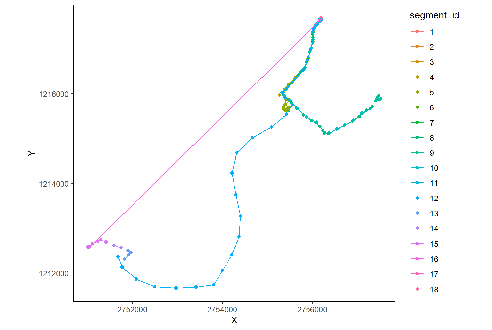
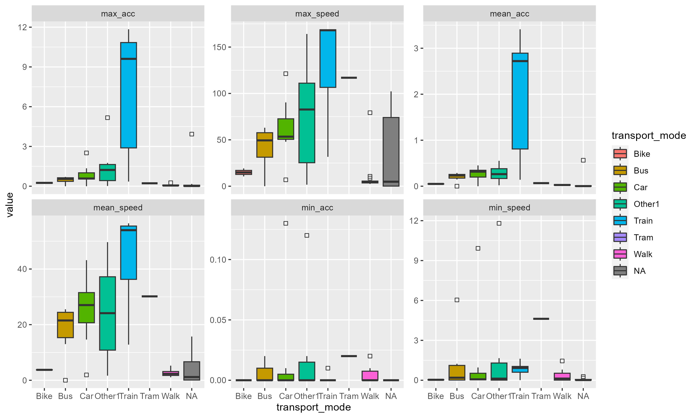
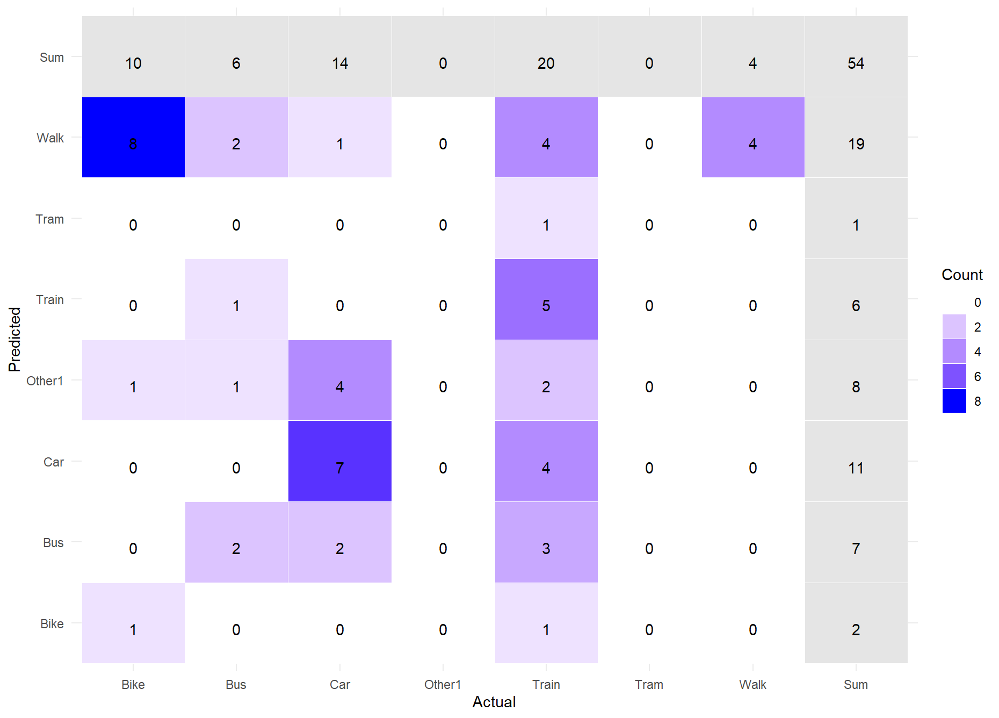
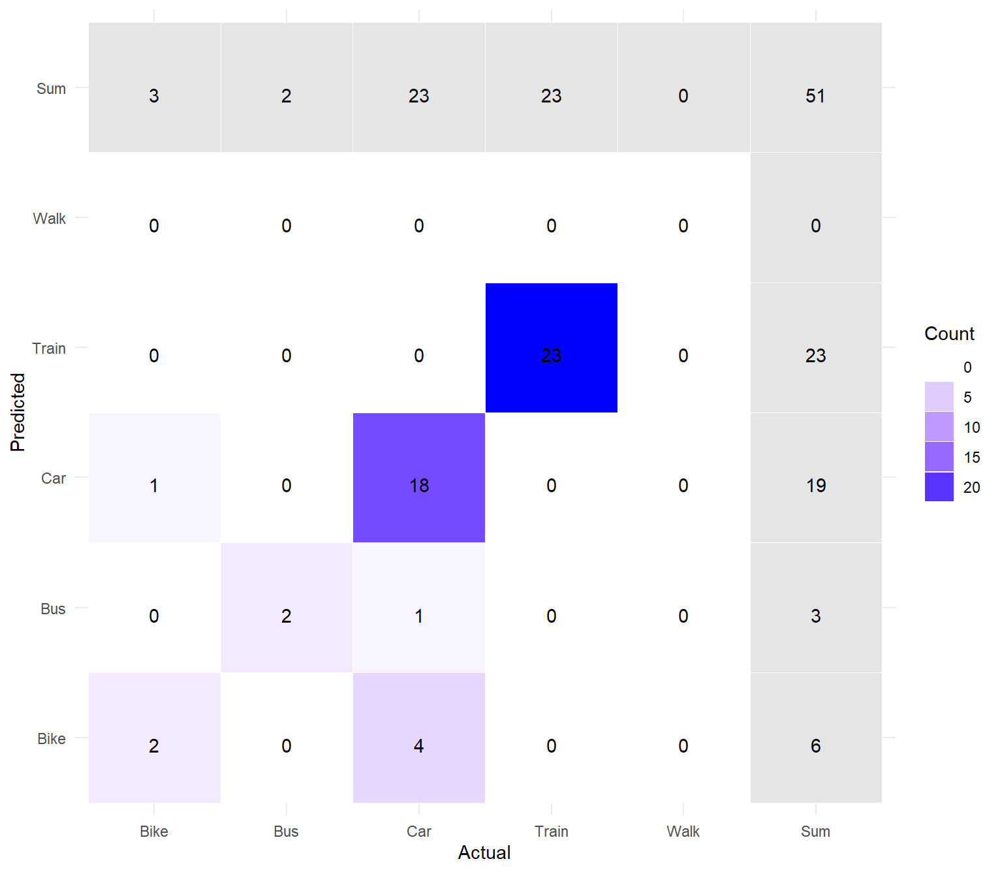

Code
library("pacman")
p_install_gh("benmarwick/wordcountaddin")
wordcountaddin::word_count("index.qmd")[1] 2665Analyzing Transport Modes through GPS-Data and Road Maps: A Comparative Study with Posmo
This study investigates travel mode detection using GPS data, a critical aspect of transportation planning and optimization. Traditional methods like household surveys are often inaccurate and costly. With the advent of smartphones, extensive GPS data collection has become feasible, yet extracting travel modes from this data remains challenging. We implemented a rule-based approach in R, using data from the POSMO app and the swissTLM3D dataset. Our method, incorporating geographical context, aimed to classify travel modes such as walking, biking, car, bus, and train. Despite initial classification errors, manual corrections improved accuracy. The validation of our method showed a correct detection rate of 88.2%, with the most significant improvement seen in the classification of train trajectories. This study underscores the potential of geographic context to improve the accuracy of travel mode detection from GPS data.
Travel mode detection, particularly using GPS data, is crucial for effective transportation planning and optimization. It lays the groundwork for strategies aimed at reducing traffic congestion and pollution (Nitsche et al., 2014). Traditionally, travel information was collected through household surveys and telephone interviews (Stopher and Greaves, 2007; Gadziński, 2018; Dabiri et al., 2020). However, these methods are often inaccurate, time-consuming, and expensive (Stopher and Greaves, 2007; Li et al., 2019; Gadziński, 2018). The advent of smartphones with GPS capabilities has revolutionized data collection, allowing for extensive and detailed gathering of spatial and temporal data (Wu et al., 2016). While GPS data provides comprehensive geometric and temporal information, further processing is necessary to extract additional attributes such as travel mode (Zhang et al., 2011; Sadeghian et al., 2021). Detecting travel modes using GPS data has attracted considerable research interest, with various methods offering different advantages and limitations. Machine learning algorithms, particularly unsupervised and deep learning approaches, are increasingly utilized due to their ability to handle large datasets and achieve accurate clustering (Li et al., 2020; Markos & Yu, 2020; Yu, 2021; Sadeghian et al., 2021). However, these methods often categorize only a limited number of modes and may not always integrate additional GIS layers, which can be achieved through rule-based methods (Sadeghian et al., 2021; Wu et al., 2016).
Rule-based methods, while potentially less accurate overall, offer the precision of distinguishing up to 12 transport modes by incorporating additional GIS layers (Sadeghian et al., 2021). These methods rely on prior understanding and manually defined rules, making them more time-consuming and less transferable but beneficial in contexts where detailed mode differentiation is necessary (Sadeghian et al., 2021; Nitsche et al., 2014). The choice between machine learning and rule-based methods ultimately depends on the study’s specific objectives and the required balance between accuracy, precision, and applicability.
Handheld mobile devices collecting GPS data facilitate straightforward collection of travel traces from various modes of transport, such as walking, cycling, and driving. These data can enhance existing road maps and support location-based services (Schroedl et al., 2004; Zhang et al., 2010). However, accurately identifying travel modes from GPS traces poses challenges due to similarities in travel characteristics across different modes and potential errors.
Given POSMO’s practical applications, our primary goal is to determine different travel modes as accurately as possible using GPS data and road maps. Therefore, we aim to implement a rule-based data science approach in R to identify travel modes using mobile GPS data. We will evaluate all travel modes present in our training data, including walking, biking, car, bus, and train, to address the following research question:
In conclusion, we would like to note that both members of the team contributed equally to the development of the code and the preparation of this report.
To develop our travel mode detection method, we collected movement data from a team member using the POSMO app (Genossenschaft Posmo, 2024) over a span of 21 days (from April 5, 2024, to April 26, 2024). During this timeframe, 12’404 data points were recorded, with a sampling rate set 15 seconds. For the next steps in our method, we focused on the following attributes:
In addition to the primary data collected with the POSMO app, we incorporated the swissTLM3D dataset provided by swisstopo (2024). The feature classes and attributes extracted from this dataset include:
A second POSMO-dataset provided by the same team member was used for validation. These data were collected over a period of 11days with a sampling rate of 15s, resulting in a total of 2567 fixes. It was eventually corrected and validated for travel mode in POSMO and the same attributes were further analyzed.
For preprocessing, analysis, and visualization, we employed R (v. 4.2.3; R Core Team, 2020) and the ggplot2 package (v. 3.4.2; Wickham, 2016).
Following the approach outlined by Laube (2014), we conceptualized the movement space as a continuous, 2D, and entity-based model. All datasets were structured as vector data, representing the movement as a series of unconstrained, intermittent, and time-stamped fixes. The movement data were collected using a Lagrangian perspective, which involves tracking the individual movements over time.
According to Wu et al. (2016), to be able to assign transport modes to trajectories, we need to first divide our raw data into segments, that represent individual movements first (Figure 1). As an initial step, we calculated the distances for each point within a specified temporal window of v = 50 seconds (4 Ticks).
Then, Static points were identified by calculating for each position the average distance to the points before and after it. These distances were then summarized to an average value. Points whose stepMean was below the overall average were marked as static. Finally, these static points were filtered from the dataset. Next, the segments whose total stepMean value is not greater than the 25th percentile of all stepMean values were then removed (Figure 2).


To be able to detect our transport modes, we had to calculate some additional variables. Sadhegian et al. (2021) suggested that average speed, maximum speed and acceleration are the most common and important ones to do so. We computed speed according to Laube & Purves (2011) using four fixes located inside a temporal window 60 seconds. The acceleration was calculated based on the same principle and defined as the change in speed over the change in time.
Then, the minimum, maximum, and average values for the two parameters were calculated for each segment (Figure 3). Additionally, each segment was assigned to the modified travel mode from POSMO. The different features of the two parameters were visualized based on their transportation mode for exploratory data analysis.

It is noticeable that most means of transportation show similar patterns or at least considerable similarities. Only the trajectories of trains differ significantly from the other modes of transportation in terms of speed and acceleration. Therefore, we decided to first embed the trajectories in their geographical context in order to improve the classification of the means of transportation.
According to Gschwend (2015), movement patterns are usually quantified by geometric properties and the arrangement of fixed points, often ignoring the geographical environment that could provide valuable semantic insights. Therefore, incorporating external information can significantly improve the efficiency of algorithms (Sadeghian et al., 2021). As described in the chapter Datasets and Models, we used different feature classes from the swissTLM3D dataset and merged all roads and railroads into a background layer. We then performed a spatial join by assigning each fixed point of the POSMO data to the closest feature, as shown in Figure 4 for an example day. Finally, each segment was assigned the feature that corresponded to the most fixed points within that segment.

In addition, the swissTLM3D feature class TLM_HALTESTELLE, which includes stops for buses, trains and ships, was used to create a 75-meter buffer around each stop. A spatial join was created for fixes within these buffer zones. It was then recorded for each segment whether the first and last points were within a stop buffer in order to use this information for further analysis.
The next step was to use the geographical context information for a classification into the transport modes. In that way, the trajectories were classified as follows: trains (closest to train tracks), trams (closest to tram tracks), and buses (first and last stops within a bus or train stop buffer). This was done step by step, so that trajectories classified once were not able to be classified again. In order to assign the other trajectories, we used the visualization of the movement parameters (Figure 3) to estimate what thresholds should be applied. In that way, we decided to classify the mode of transportation as car if he maximum speed was greater than 20 km/h or the maximum acceleration was greater than 0.3 m/s² and if the average speed was over 2 km/h or the maximum speed was over 5 km/h, the mode of transport was classified as bike.
The next step was to compare the result of our transport mode detection with the POSMO classification and create a confusion matrix. However, since our method originally consists of this data, this cannot be counted as an actual validation. In order to properly test our method, a second data set from POSMO, which was recorded over a period of 11 days, was subjected to the same methodology as our training data set, except that we have manually checked the transportation modes specified by POSMO in this dataset and corrected them if necessary. The results of this second transport mode detection were then used to create another confusion matrix.
In the validation of the transportation modes in our training dataset, we achieved an accuracy of 35 % with our method (Figure 5). If we apply the same method to the validation dataset, the confusion matrix shows (Figure 6) a correct detection of 88.2%, which is significantly higher. Looking at Figure 5, it is clear that the biggest problem area in the training data is the recognition of the train (n= 20) as a means of transportation (25 % correct classification). However, in the evaluation of the validation data, train is the mode of transport that was best recognized (100% correct classification). Apart from cars (78.2%), the other modes of transport were also recognized very well.


The results of our study reveal several critical points about the detection of transportation modes from GPS data using our proposed rule-based method.
Our method exhibited poor detection accuracy in the training dataset, which we attribute primarily to errors in the initial POSMO classification. Upon examining the raw data, we observed several unrealistic trajectories and instances where single trajectories were divided into multiple short segments. The POSMO app sometimes generated unrealistic trajectories, significantly affecting our model’s performance. The segmentation errors, where long trajectories were broken into several short segments without clear reasons, further compounded these issues. These mistakes were not detected and manually corrected during the initial data collection phase, which led to inaccuracies in the transportation mode detection. Low detection accuracy were evident across all transportation modes. However, they were most pronounced for train trajectories due to the higher number of train trips recorded.
For the validation dataset, we manually reviewed and corrected the POSMO classifications daily to ensure accuracy. This process aimed to rectify the errors present in the training data, ensuring that the transportation modes identified by POSMO were accurate. Consequently, our method achieved higher detection accuracy with the validated data. As can be seen in figure 6, no walk trajectories were detected, likely because these segments were too short and were filtered out during data preprocessing. This highlights a limitation in our methodology, where shorter, potentially valid segments were lost during filtering.
Despite these issues, our method demonstrated good accuracy (88,2 %) compared to other studies (Sadeghian et al., 2021; Wu et al., 2016). This suggests that, when provided with accurate input data, our approach is robust and effective in detecting various transportation modes.
However, our study had several limitations. The relatively small number of data points used limits the generalizability of our findings. It would be intriguing to see how our method performs with larger datasets. Furthermore, our method heavily depends on the correct initial classification by the POSMO app. Errors in the app’s data significantly impacted our results, highlighting the importance of reliable initial data for accurate mode detection. Although our research question was only partially answered, the parameters and geographic context we used resulted in good accuracy in mode detection. However, the condition that raw data and validation foundations are correct and suitable for the procedure is crucial for the success of this approach.
In summary, while our rule-based method shows promise, particularly when supplemented with manual correction and validation, it underscores the necessity of accurate initial data and larger datasets for improved performance and reliability in transportation mode detection.
Dabiri, S., Lu, C.-T., Heaslip, K., & Reddy, C. K. (2020). Semi-Supervised Deep Learning Approach for Transportation Mode Identification Using GPS Trajectory Data. IEEE Transactions on Knowledge and Data Engineering, 32(5), 1010–1023. https://doi.org/10.1109/TKDE.2019.2896985
Gadziński, J. (2018). Perspectives of the use of smartphones in travel behaviour studies: Findings from a literature review and a pilot study. Transportation Research Part C: Emerging Technologies, 88, 74–86. https://doi.org/10.1016/j.trc.2018.01.011
Gschwend, C. (2015). Relating movement to geographic context: effects of preprocessing, relation methods and scale (Doctoral dissertation, University of Zurich).
Laube, P. (2014). Computational Movement Analysis. Springer International Publishing. https://doi.org/10.1007/978-3-319-10268-9
Laube, P., & Purves, R. S. (2011). How fast is a cow? Cross‐Scale Analysis of Movement Data. Transactions in GIS, 15(3), 401–418. https://doi.org/10.1111/j.1467-9671.2011.01256.x
Li, L., Zhang, J., Wang, Y., & Ran, B. (2019). Missing Value Imputation for Traffic-Related Time Series Data Based on a Multi-View Learning Method. IEEE TRANSACTIONS ON INTELLIGENT TRANSPORTATION SYSTEMS, 20(8).
Li, L., Zhu, J., Zhang, H., Tan, H., Du, B., & Ran, B. (2020). Coupled application of generative adversarial networks and conventional neural networks for travel mode detection using GPS data. Transportation Research Part A: Policy and Practice, 136, 282–292. https://doi.org/10.1016/j.tra.2020.04.005
Markos, C., & Yu, J. J. Q. (2020). Unsupervised Deep Learning for GPS-Based Transportation Mode Identification. 2020 IEEE 23rd International Conference on Intelligent Transportation Systems (ITSC), 1–6. https://doi.org/10.1109/ITSC45102.2020.9294673
Nitsche, P., Widhalm, P., Breuss, S., Brändle, N., & Maurer, P. (2014). Supporting large-scale travel surveys with smartphones – A practical approach. Transportation Research Part C: Emerging Technologies, 43, 212–221. https://doi.org/10.1016/j.trc.2013.11.005
RStudio Team (2020). RStudio: Integrated Development for R. RStudio, PBC, Boston, MA URL http://www.rstudio.com/.
Sadeghian, P. (o. J.). Review and evaluation of methods in transport mode detection based on GPS tracking data.
Schroedl, S., Wagstaff, K., Rogers, S., Langley, P., & Wilson, C. (2004). Mining GPS Traces for Map Refinement. Data Mining and Knowledge Discovery, 9(1), 59–87. https://doi.org/10.1023/B:DAMI.0000026904.74892.89
Stopher, P. R., & Greaves, S. P. (2007). Household travel surveys: Where are we going? Transportation Research Part A: Policy and Practice, 41(5), 367–381. https://doi.org/10.1016/j.tra.2006.09.005
Wickham H (2016). ggplot2: Elegant Graphics for Data Analysis. Springer-Verlag New York. ISBN 978-3-319-24277-4, https://ggplot2.tidyverse.org.
Wu, L., Yang, B., & Jing, P. (2016). Travel Mode Detection Based on GPS Raw Data Collected by Smartphones: A Systematic Review of the Existing Methodologies. Information, 7(4), 67. https://doi.org/10.3390/info7040067
Yu, J. J. Q. (2021). Travel Mode Identification With GPS Trajectories Using Wavelet Transform and Deep Learning. IEEE Transactions on Intelligent Transportation Systems, 22(2), 1093–1103. https://doi.org/10.1109/TITS.2019.2962741
Zhang, L., Dalyot, S., Eggert, D., & Sester, M. (2011). MULTI-STAGE APPROACH TO TRAVEL-MODE SEGMENTATION AND CLASSIFICATION OF GPS TRACES.
Zhang, L., Thiemann, F., & Sester, M. (o. J.). Integration of GPS traces with road map.
library("pacman")
p_install_gh("benmarwick/wordcountaddin")
wordcountaddin::word_count("index.qmd")[1] 2665